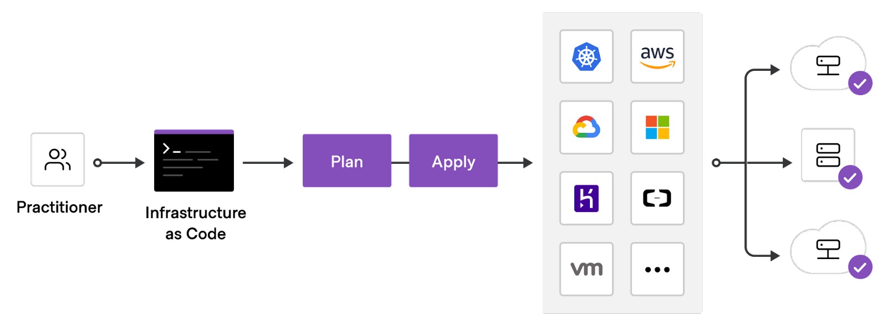
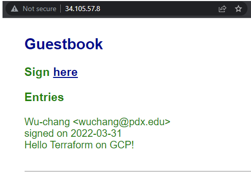

Terraform is an open-source infrastructure as code tool that provides a consistent workflow to manage hundreds of cloud resources. With Terraform, one codifies infrastructure into declarative configuration files that the tool will then deploy into the underlying cloud provider. The figure below shows an example workflow. A practitioner first defines a configuration file that is typically committed into a git repository, then runs a planning step to view the potential effects the configuration might have, before applying the configuration onto a cloud platform which deploys the specified resources.

To begin with, open a Cloud Shell session from the console and execute the command below to find the version of terraform that has been installed.
terraform --version
Then, create a directory for your terraform deployment and change into it.
mkdir tf; cd tf
In order for terraform to deploy resources onto your project, it requires owner permissions for the project. As a result, any credentials we issue in this lab are particularly sensitive if exposed and should be removed afterwards.
Next, create a service account for the lab via the CLI.
gcloud iam service-accounts create tf-lab
Then, attach a policy binding that allows it full access to Compute Engine permissions for the project.
gcloud projects add-iam-policy-binding ${GOOGLE_CLOUD_PROJECT} \
--member serviceAccount:tf-lab@${GOOGLE_CLOUD_PROJECT}.iam.gserviceaccount.com \
--role roles/compute.admin
Finally, issue a service account key for the service account that terraform will then use for its access to project resources and store it in tf-lab.json.
gcloud iam service-accounts keys create tf-lab.json \
--iam-account tf-lab@${GOOGLE_CLOUD_PROJECT}.iam.gserviceaccount.com
We will be incrementally creating a specification for deploying our Guestbook application on a Compute Engine VM. terraform uses its own structured data format similar to JSON and YAML for declaratively specifying platform resources to create. The first block to add specifies the cloud provider we are deploying on (Google). Within this block, we must specify the credential file we'll be using (tf-lab.json), the Project ID the resources will be deployed in, and the default region where resources will be deployed (us-west1). Create a file named main.tf and copy the code below into it after setting the project to that of your own.
main.tf
// Configure the Google Cloud provider
provider "google" {
credentials = file("tf-lab.json")
project = "<FMI>"
region = "us-west1"
}In this lab, we wish to create a Compute Engine virtual machine to run our application. Each cloud provider has unique labels that can be used to specify the operating system image a VM will run. Since we will run our application on a Ubuntu VM, use the command below to list all of the standard Ubuntu VM images Google Cloud has available for use. Find the most recent image in the ubuntu-2004-lts family.
gcloud compute images list --standard-images --filter name:ubuntu*
On Google Cloud Platform, image names are given in the format PROJECT/NAME. Identify the image name for the image found (e.g. ubuntu-os-cloud/ubuntu-2004-focal-... ). We will be using it below in the next block in our terraform file. The block we add specifies a Compute Engine instance to be created with the name tf-lab-vm using a machine type of f1-micro in zone us-west1-b. Fill in the image name and save the file.
main.tf
// A single Compute Engine instance
resource "google_compute_instance" "default" {
name = "tf-lab-vm"
machine_type = "e2-medium"
zone = "us-west1-b"
boot_disk {
initialize_params {
image = "<FMI>"
}
}
network_interface {
network = "default"
}
}Based on what is specified in the configuration file, terraform will load software modules that will help it launch the resources. This is akin to installing packages using npm (for NodeJS) or pip (for Python). Run the following command to do so for terraform.
terraform initThe next command to run is a forecasting tool to allow one to simulate a deployment without actually doing so. This allows one to see the impact the application of a configuration might have on the platform, including the number of resources added, changed, or destroyed. Ensure the following command below returns a plan to add a single resource (the Compute Engine VM).
terraform planFinally, apply the configuration to deploy the resources onto the platform (answering yes to approve the operation)
terraform applyVisit the Compute Engine web console and find the VM that you have deployed.
- Take a screenshot that includes the VM's IP addresses
As the screenshot shows, the "default" network configuration only assigns an internal IP address to your instance. This is insufficient for our web application which requires an externally routable IP address for users to access. We will now modify our terraform configuration to obtain one.
One of the benefits of a declarative approach for specifying our infrastructure is that we can make changes to the specification and then update our deployment in place. In this case, we want to allocate an external IP address, attach it to our VM, and output the IP address obtained. To do so, go back to the specification and before the declaration of the google_compute_instance resource, specify a google_compute_address resource to allocate.
main.tf
// A single IPv4 address
resource "google_compute_address" "static" {
name = "ipv4-address"
}Then, within the google_compute_instance resource block, change the network_interface specification to attach the above address.
main.tf
network_interface {
network = "default"
access_config {
nat_ip = google_compute_address.static.address
}
}Finally, we'd like Terraform to report back to us the IP address that was allocated for us so we can connect up to it. To do so, at the end of the configuration, add an output block that returns the address.
main.tf
// A variable for extracting the external IP address of the instance
output "ip" {
value = google_compute_instance.default.network_interface.0.access_config.0.nat_ip
}Run terraform plan again. Ensure there is one resource being added (the IP address), one resource being changed (the VM), and a new output (ip). After ensuring this is the case, apply the configuration.
- Take a screenshot showing the completion of the command including its output
Visit the Compute Engine web console and refresh it to see that the IP address has been bound to the VM.
- Take a screenshot that includes the VM's IP addresses
The VM we've created now has an external address. From Cloud Shell, attempt to ssh into the VM.
ssh <External_IP_Address>The VM has been configured to only allow ssh access via ssh keys, but has not been configured with any keys. The keys used for ssh are typically located in ~/.ssh once they have been generated. If you have not generated an ssh key pair for your Cloud Shell account, use ssh-keygen to generate a keypair. While there are several to choose from, many recommend EdDSA (Edwards-curve Digital Signature Algorithm), a fast elliptic-curve Diffie-Hellmann function.
ssh-keygen -t ed25519After generation, the private key is stored in ~/.ssh/id_ed25519 and the public key is stored in ~/.ssh/id_ed25519.pub. We will now need to update our terraform configuration to add the public key to the VM so we can ssh into the machine. This can be done by adding the public key to the Metadata of the VM. To specify it, modify the configuration by adding the following field to the google_compute_instance resource, replacing <FMI> with your username (e.g. what is returned via echo $USER in Cloud Shell). This will create an account on the VM using this username when one uses the associated private key to log into the VM.
main.tf
metadata = {
ssh-keys = "<FMI>:${file("~/.ssh/id_ed25519.pub")}"
}Perform the plan again and check that the deployment is correct, then apply the change. After it has been applied, repeat the ssh command to log into the VM.
- Take a screenshot of the successful ssh login from Cloud Shell.
We now want to configure our infrastructure with our application. While there are many options for doing so, we'll simply re-purpose our prior Compute Engine deployment from an earlier lab. There are two things we must add.
The first thing to add is the set of commands for installing and running the application. Compute Engine VMs can be specified with a startup script in its Metadata that will execute as soon as the VM is instantiated. For our application, we want the VM to install the necessary packages on the machine, clone the course repository containing the Guestbook code, and run gunicorn on port 80 to serve the Guestbook. Create a file in the directory on Cloud Shell with the installation script to run when the VM is created.
install.sh
#! /bin/bash
apt update
apt install -yq build-essential python3-pip gunicorn git
pip install flask
git clone https://github.com/wu4f/cs430-src /root/cs430-src
cd /root/cs430-src/03_nginx_gunicorn_certbot
gunicorn --bind :80 --workers 1 --threads 8 app:appThen, include the file in the configuration by setting the metadata_startup_script value in the google_compute_instance resource block to the local file.
main.tf
metadata_startup_script = "${file("install.sh")}"The second thing to add are the firewall rules via network tags to allow HTTP requests to reach the application. To specify the firewall rule that allows HTTP access, we can leverage the fact that the http-server network tag comes pre-defined on every project that can be used to enable HTTP access for the VM. Within the google_compute_instance resource specification, add the tag.
main.tf
tags = ["http-server"]Run terraform plan using this updated specification.
- What resources are being added, changed, or destroyed?
- What part of the configuration forces a replacement to occur?
Run terraform apply using this updated specification. It will take several minutes for the VM to perform the installation of the application. ssh into the instance and perform a process listing until the gunicorn process appears.
ps auxww | grep gunicornVisit the external IP address for the VM using a web browser (e.g. http://<External_IP_address>).
Enter a message using your name, PSU e-mail address, and the message "Hello Terraform on GCP!".
- Take a screenshot of the Guestbook including the URL with the entry in it.

The power of an "Infrastructure as Code" deployment such as Terraform is that it allows us to automate the deployment of infrastructure in a repeatable manner. The final main.tf file can be committed to a git repository and versioned: allowing one to roll back to prior working versions of the infrastructure if breaking changes are made.
Bring down the terraform deployment using the following command:
terraform destroy
Examine the service account key credential in tf-lab.json and find its KEY_ID (e.g. private_key_id). Then delete the key by running the command below, substituting the KEY_ID with that found in the file.
gcloud iam service-accounts keys delete <KEY_ID> \
--iam-account tf-lab@${GOOGLE_CLOUD_PROJECT}.iam.gserviceaccount.com
Then, remove the policy binding added to the service account.
gcloud projects remove-iam-policy-binding ${GOOGLE_CLOUD_PROJECT} \
--member serviceAccount:tf-lab@${GOOGLE_CLOUD_PROJECT}.iam.gserviceaccount.com \
--role roles/compute.admin
Finally, delete the service account.
gcloud iam service-accounts delete tf-lab@${GOOGLE_CLOUD_PROJECT}.iam.gserviceaccount.com
You may optionally delete the directory you created for the lab.
rm -r ~/tf